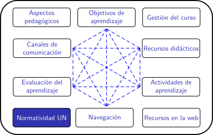

Planificación de clases remotas en la UNAL (periodo 2020-02)
Normas UN excepcionales
Un periodo excepcional requiere normas excepcionales
Política y lineamientos:
- Resolución 338 de Rectoría. "Por la cual se adoptan la política y sus líneas para aportar a la prevención y mitigación del Covid-19 en la comunidad universitaria y el protocolo para retorno a algunas actividades presenciales en los campus e instalaciones de la Universidad Nacional de Colombia".
- Protocolo para retorno a algunas actividades presenciales en los campus e instalaciones de la Universidad Nacional de Colombia.
Guía de reanudación gradual de actividades para la sede Bogotá:
Normas de tipo académico
- Resolución 347 de Rectoría. Atención: Esta norma NO rige para el periodo 2020-02. Por la cual se adoptan medidas en materia académica para afrontar los efectos del confinamiento por la emergencia sanitaria causada por el COVID-19
Otros documentos de interés
Reflexión
- ¿Qué sugerencia puede hacerle a las autoridades universitarias en relación con las normas académicas para el semestre 2020-02? Participe en el foro.
Obra publicada con Licencia Creative Commons Reconocimiento Compartir igual 4.0